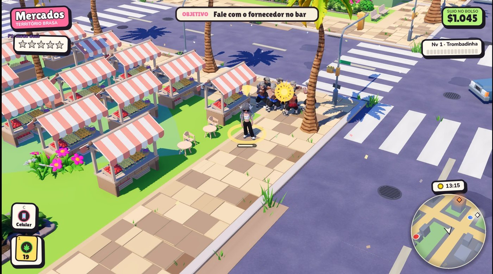
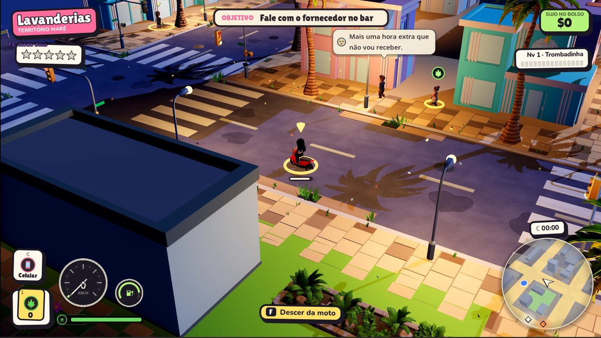
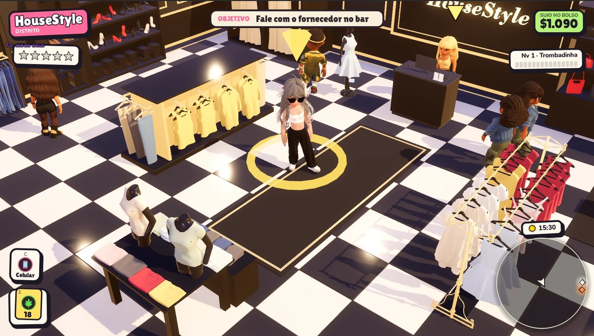
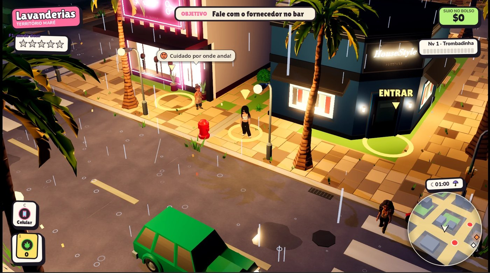
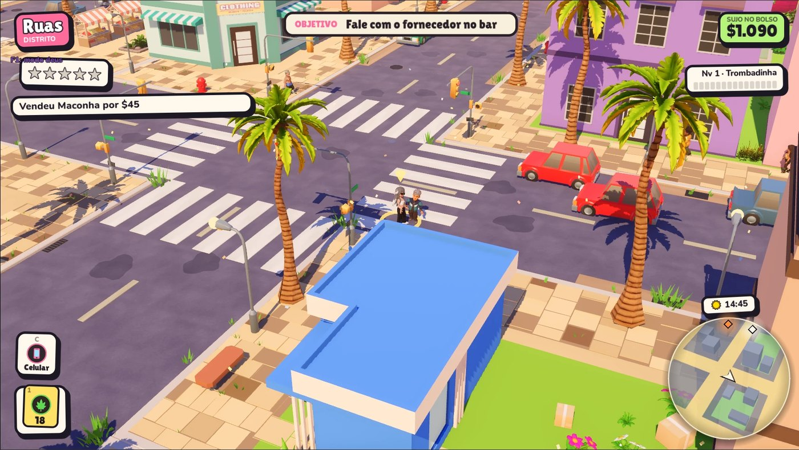
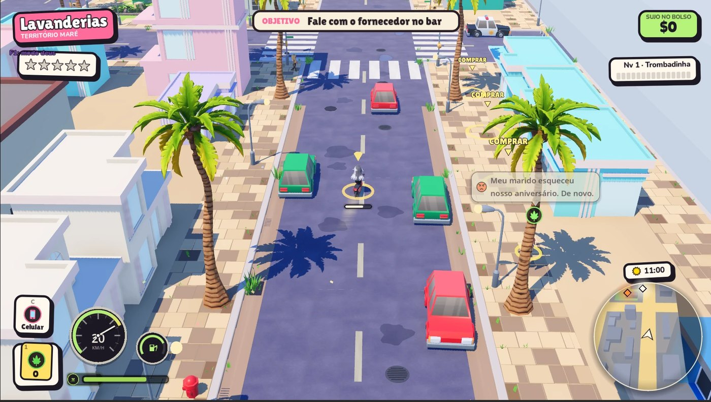
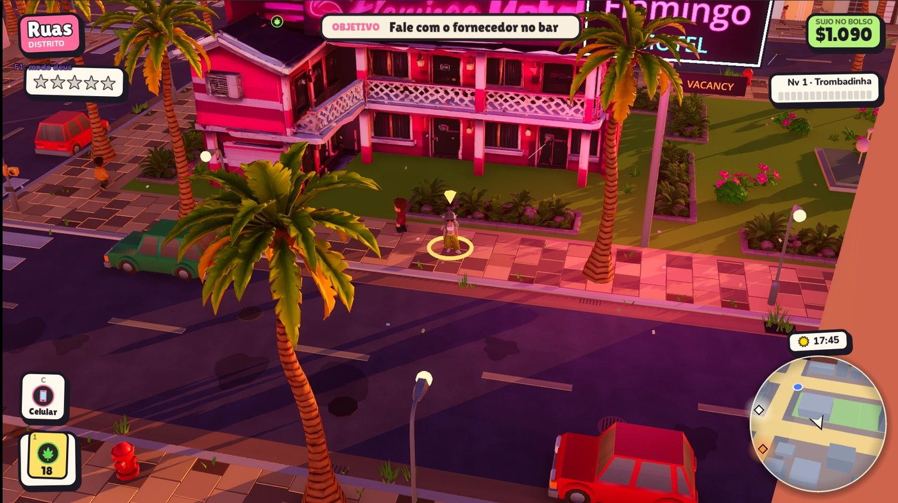
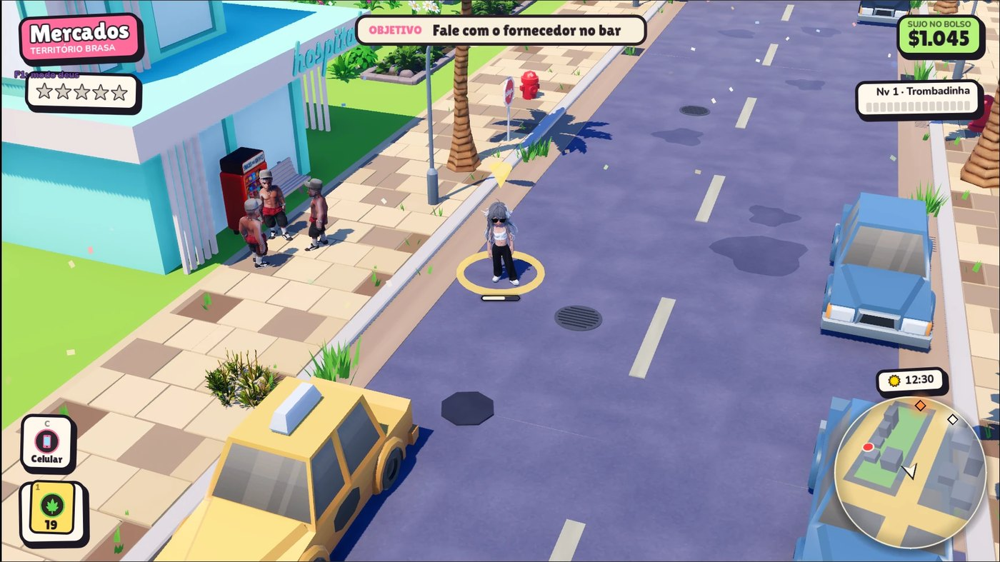
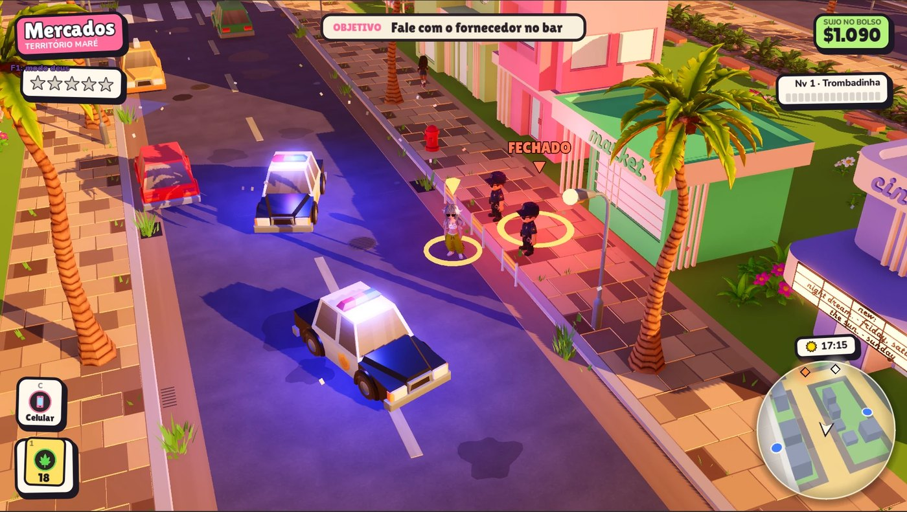

💰
Dinheiro sujo e limpo
O que vem da rua é sujo e chama atenção. Lavar custa taxa — mas é o único jeito de comprar imóvel e subir de vida.
Você chegou na cidade sem nada além do aluguel do hotel pra pagar. A rua oferece um jeito rápido de resolver isso — e cobra caro depois.
Gameplay gravado no jogo — 1280×720
Uma cidade litorânea em blocos: casas coloridas, palmeiras, mercados, a feira, o cais. De dia ela parece tranquila. À noite, muda de dono.









Cada parte da cidade responde ao que você faz: o dinheiro, a polícia, os contatos no celular, o mecânico que você chama quando a moto morre.
O que vem da rua é sujo e chama atenção. Lavar custa taxa — mas é o único jeito de comprar imóvel e subir de vida.
Contatos, banco, mensagens, entregas. Os clientes ligam pedindo; você atende, entrega e recebe. O mecânico também está na agenda.
Tem tanque, tem motor e tem lataria. Bater forte derruba você; rodar no seco te deixa na mão. O mecânico conserta na hora — ou leva pra garagem.
Quanto mais você aparece, mais a cidade te conhece. Perseguição, batida no mercado, mandado. Nem tudo se resolve correndo.
Cada contato tem história própria e um favor que só ele faz. A amizade sobe com o que você entrega — e cai quando você falha.
O relógio anda, o céu muda, a chuva chega. À noite as portas abrem e os bares enchem. De dia, a cidade vigia.
A premissa é simples: pagar o aluguel do hotel. Só que a cidade não deixa ninguém sair do jogo no zero.
Aos poucos você descobre que tudo ali é controlado pela HEMP — e que o fornecedor, quem te ajudou no começo, está no meio de uma guerra que esconde de você.
São seis atos, cada um com uma droga e um nível. No caminho: o Navalha, a Delegada Vera Ramos, o Padrinho. E três finais possíveis.
Versão em desenvolvimento. Roda direto no Windows, sem instalador: extraia a pasta e abra o executável.
Chegou sem nada. A rua oferece um caminho. Só não promete que você volta.
⬇ DOWNLOAD PARA WINDOWS